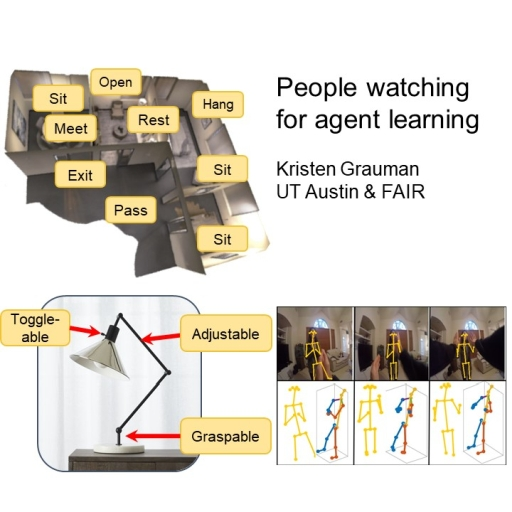

3D Scene Understanding for Vision, Graphics, and Robotics
CVPR 2020 Workshop, Virtual, June 15th, 2020
Invited Talk
| Time (PDT) | Speaker | Title | Slides |
|---|---|---|---|
| 9:00am - 9:15am | David Forsyth | 3D Vision: Subjunctives |
|
| 9:15am - 9:45am | Andreas Geiger | Learning 3D Reconstruction in Function Space |
|
| 9:45am - 10:15am | Jeannette Bohg | The Importance of Depth Data for Decision-making in Robot Manipulation | Live |
| 10:45am - 11:15am | Shuran Song | Learning Visual Representations for Generalizable Manipulation |
|
| 11:15am - 11:45am | Yasutaka Furukawa | CVPR is a Contemporary Art Exhibition |
|
| 2:00pm - 2:30pm | Andrea Tagliasacchi | Structured Representations for 3D Computer Vision | Live |
| 2:30pm - 3:00pm | Katerina Fragkiadaki | 3-Dimensional Neural Scene Representations for Perception and Control | Live |
| 3:30pm - 4:00pm | Sergey Levine | Embodied Implicit Scene Understanding | |
| 4:00pm - 4:30pm | Kristen Grauman | People Watching for Agent Learning  | Live |
| 4:30pm - 5:00pm | Daniel Ritchie | Toward Synthesizing Training Data for 3D Scene Understanding | Live |
Oral Presentation 1
| Time (PDT) | Title | Slides |
|---|---|---|
| 10:15am - 10:25am | SAPIEN: A SimulAted Part-based Interactive ENvironment |
|
| 10:25am - 10:35am | SuperGlue:Learning Feature Matching with Graph Neural Networks |
|
| 10:35am - 10:45am | Novel View Synthesis of Dynamic Scenes with Globally Coherent Depths from a Monocular Camera |
Oral Presentation 2
| Time (PDT) | Title | Slides |
|---|---|---|
| 11:45am - 11:55am | Video Inference for Human Body Pose and Shape Estimation |
|
| 12:05pm - 12:15pm | Deep Visual Reasoning: Learning to Predict Action Sequences for Task and Motion Planning from an Initial Scene Image |
|
| 12:15pm - 12:25pm | 3D Dynamic Scene Graphs Actionable Spatial Perception with Places, Objects, and Humans |
Oral Presentation 3
| Time (PDT) | Title | Slides |
|---|---|---|
| 3:00pm - 3:10pm | Interactive Gibson Environment:a Simulator for Embodied Visual Agents |
|
| 3:10pm - 3:20pm | Neural Topological SLAM for Visual Navigation |
|
| 3:20pm - 3:30pm | Local Deep Implicit Functions for 3D Shapes |